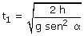
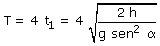

a) Tiempo que dura la bajada por la rampa 1:  Evidentemente la aceleración de la bolita en la rampa
2 es la misma que en la rampa 1. Hasta detenerse recorrerá la misma
distancia y tardará el mismo tiempo que al bajar la rampa 1. Naturalmente la bajada por la rampa 2 y subida por la rampa 1 consumirá también un tiempo 2t1 Por tanto el período del movimiento (Tiempo transcurrido hasta repetir situación) será  |